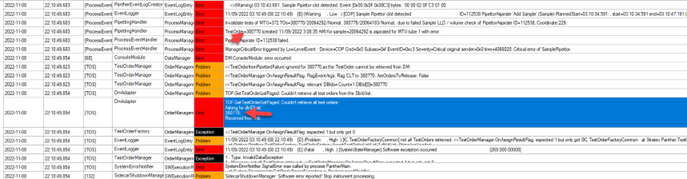

SW 7.1 – Mismatch of Quested and Stored MTU ID
Root cause:
Bios is at A24, so it should be downgraded to A07 (TB-01507).
USB situation also looked at.
Root Cause #1:
2020-09-19 11:41:33,880 [MsgHandler] EventLogger EventLogEntry Error 09/19/2020 18:41:33 (19 11:41:33) [E] (Fatal , High ) [SidecarSlaveDriver] Mismatch of quested and stored MTU ID (InstrumentEvent) [0x16.0x01.0x0024] bytes: 16 00 03 01 24 54 00 00 D7 00 [022.001.00036]
2020-09-19 11:41:33,880 [ProcessEvent] ProcessEventHandler ProcessManagement Error ManageFatalError triggered by InstrumentEvent - Device=SidecarSlaveDriver Cmd=0x0 Subass=0x1 EventID=0x24 Severity=Fatal. Fatal error of SidecarSlaveDriver,
Root Cause #2:
7.1 failure mode MKS 2042330
There are no DM requests larger than four seconds (requested from UI).
-----------------------------------------
D:\2090\Complaints\2042330\Output\Log\log_PantherMain_20200323-124500022.txt.758
2020-03-26 22:09:18,941|[MsgHandler]|TestOrderManager|OrderManagement|Info|Normal|<<TOM.InternalMessageReceive: (InternalMsg 369603 TransmitSidecarResultsToLis System.Collections.Generic.List`1[CommonLib.PantherDataModel.OrderManagement.TestOrder])
-----------------------------------------
D:\2090\Complaints\2042330\Output\Log\log_PantherMain_20200323-124500022.txt.763
2020-03-26 22:34:49,214|[MsgHandler]|LisHelper|LIS Laboratory Information System.|Info|Normal|<<LIS: Results queued for sending to LIS.
Laboratory Information System.|Info|Normal|<<LIS: Results queued for sending to LIS.
2020-03-26 22:34:49,214|[MsgHandler]|TestOrderFactory|OrderManagement|Info|Normal|TOF.AutomaticallySaveAndSendToLis: transmitted=1, sent to LIS=1.
2020-03-26 22:34:49,214|[MsgHandler]|MessageHandler|MHTimesMain|Info|Problem|Timespan 00:25:30.2727585 for executing in TestOrderManagement module; InternalMsg 369603 TransmitSidecarResultsToLis System.Collections.Generic.List`1[CommonLib.PantherDataModel.OrderManagement.TestOrder]. Exceeded limit: 3000ms
MsgHandler thread could not continue until after the m_bgtLock was released when SendResults to LIS finished (32 minutes) -> while MsgHandler thread is blocked the internal messages are not sent -> the commands to COP are sent with delay -> the exception "Rotary Distributor Driver (ID is unknown, can not pick unit)" is raised.
The system transitions to error state when a large amount of results is sent to LIS.
Root Cause #3:
MKS# 2273693 which is targeted to be fixed in the 7.2.5.
Panther Sample Pipettor had a Non-String Type 3 error. From Mike Despars:
It is similar to MKS# 1216571, which is targeted to be fixed in the 7.2.5 Trax release coming this year.
It is due to a defect with how we handle the Error Assay Processing completing state. The pipettor error (nonstr-type 3) error set the instrument in Error AP Completing. However, the sidecar did not handle this correctly. It set itself back into a Ready state and asked for more MTUs to be introduced. Since the MTUs could not be handled, it resulted in the Mismatch of quested and stored MTU ID error.
Root Cause #4:
Operator called to report the Panther automatically shut down last night.
The Panther was processing SARS specimens last night and had started alarming at 10:10pm, the same time a clot was detected on a sample.
Clots are often detected on SARS specimens, but the Panther never just shuts down.
At the same time, there was Software Exception Occurred error.
She said they had reset the Panther, and prime had passed.
Looks like a variation of “Mismatched of quested and stored MTU ID error”, except it occurs much sooner because clot forces deletion of test order.
Clot detected with TestOrder = 380770 SampleID=20064292
TO 380770 was created:
2022-11-08 22:08:36,006|[100]|TestOrderFactory|OrderManagement|Info|Normal|OnTestOrderCreated:380772, 380769, 380774, 380780, 380775, 380770, 380773, 380778, 380777, 380776
LIS already set to run the following tests:
11/08/2022 10:08:41 PM LAC1 Test Order deleted from Sample 20064292: Assay LDT-SARS-CoV-2, Analytes SARS-CoV-2
TO deleted:
2022-11-08 22:08:41,813|[PI.TestOrderManager:.#0]|TestOrderManager|PantherUI|Info|Normal|OnDmCallbackTestOrderDeleted[956]: eventType: Deleted; dbIds: 380769,380770,380771,380772,380773,380774,380775,380776,380777,380778,380779,380780;
New test associated:
11/08/2022 10:08:47 PM LAC1 Test Order added to Sample 20064292: Assay SARSCoV2
CLT error:
2022-11-08 22:10:49,683|[ProcessEvent]|EventLogger|EventLogEntry|Info|Error|11/09/2022 03:10:49 (08 22:10:49) [E] (Warning , Low ) [COP] Sample Pipettor clot detected ID=112538 PipettorAspirate 'Add Sample' (Sample) PlannedStart=03:10:34.591: , start=03:10:34.591 end=03:10:47.191 (MTU=372 BarcodeID=2293936880, samples=380770/20064292/Normal, , cmd params: Sample (SP) [coo=229,fZ=149] , vol=381, track=64, fluid=32776 ). Event [0x00.0x0F.0x00C3] at 03:10:43.691 bytes: 00 00 02 0F C3 01 00 [000.015.00195]
SW received empty set when test order 380770 was retrieved.

 button at the top of the page to send feedback, comments, or change requests.
button at the top of the page to send feedback, comments, or change requests.